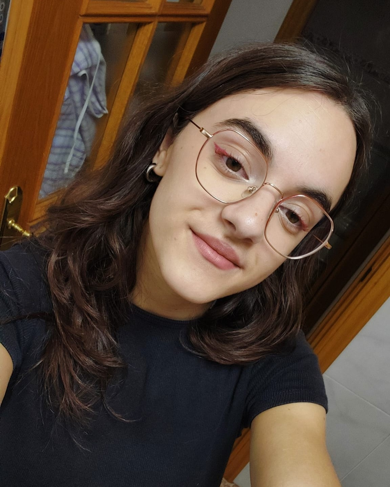

Portfolio Personal
Aquí puedes ver unos cuantos ejemplos de mis trabajos durante mi carrera en la EASDA.
Si se hace click en cada uno de los enlaces, te llevarán a una página en la que te explico muy brevemente dicho trabajo, con imágenes para que puedas juzgar con tu propio criterio.
Pero siempre con respeto porfa.

Buenasss!!
Soy Aitana García...
...y estoy estudiando 3º de diseño gráfico en la EASDA.
Durante mi estancia en la esucela, he ido desarrollando mi faceta de diseñadora, con la que trato de resolver problemas con soluciones visuales y comunicativas.